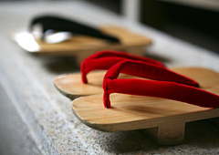

- 生活良品研究所
- 生活杂货
- 观天望气
观天望气
"观天望气"读作"Kantenbouki"。如"观察天象、展望天气"的字面所述，指观察光、云和风等自然现象，预测次日的天气。在没有天气预报的时代，这是农民或渔民的必然手段。观天望气有多种方法，但这些方法都有科学依据吗？或者只是一种传言或者迷信呢？本次我们就无需科学技术的天气预报进行了探讨。
晚霞意味着晴天？
以前有一种叫"明天有个好天气吧"的游戏，游戏中会"踢飞脚上的木屐"。因为是木屐时代，所以应该是很古老的游戏吧，游戏中如果木屐正面朝上落下则视为"晴天"，而如果相反则视为"雨天"、横立视为"多云"。当然，天气和木屐掉落方式无关。在无科学依据的天气预报时代，孩子们通过这种游戏来猜测次日的天气。
不过，在那样的古老时代也有预测天气的手段。这种手段被称作"观天望气"。例如，"晚霞意味着晴天"这种说法便是其中之一。因为晚霞是西方天空晴朗所致。日本的天气一般是由西向东移动，因此，如果西方的天空晴朗，那么次日天气晴朗的几率便会提高。"月亮或太阳戴帽、大雨就到"这句俗语也与此相似。低气压由西方接近时，首先会产生雨云，然后在高空布满薄薄的层形云。如同为月亮或太阳戴上帽子的这种薄云可视为雨云在慢慢接近的预兆。这种观天望气的方法多数都具有科学依据。
云预报天气
导致日本春秋季多雨的主要是来自由西方向东方渐进的温带低气压。温带低气压在中心部位伴随雨云，但其前方有中层云，而此前方的前方伴随着高层云。也就是说，低气压以高层云→中层云→雨云的顺序渐进。因此，春秋季时对云的种类进行一定的观察可预测天气变化。
例如：高空出现的"卷云"。如同毛刷描绘出的图案，所以又被称作"筋云"，这种云距离低气压最远，出现这种云时大多会在次日或第三天前后降雨。此外，被称作"卷积云"或"鱼鳞状卷积云"的"卷积云"也是气候恶化的预兆。这种云经常低气压接近前出现，据说大概在12小时前后便会降雨。而另一方面，被称作"棉花云"的"积云"一般在天气比较稳定时出现。看到以动物或人脸等各种形状出现的云朵时，可无需担心天气恶化。
白贝罗定律
在没有天气预报的时代，船员们冒着生命危险航行于汪洋大海中。因为小型帆船一旦遭遇狂风即会有翻船的危险。因此，船员们根据航海经验发明了预测带来风暴的低气压位置的定律。这便是荷兰气象学家白贝罗自1857年起提倡的"白贝罗定律"。这种定律非常简单。以"背风而立，左手前方即为低气压的中心"为标准即可判断。白贝罗定律不但适用于海域，用于陆地上的判断也很准。例如：台风接近时，利用这个定律便可掌握台风的中心位置。如果风雨吹打在南侧窗上，那么背对该窗户，左手前方、即"西方"或"西北"方向便有台风。一般记住"背风站立，低压在左"即可。肉眼看不到的低气压位置由此便随手可得。
磨炼直感
这个季节至夏季来临期间将会经常出现突然的雷雨现象。除了最近单纯的傍晚雷阵雨以外，突发性的大雨"游击型暴雨"也在逐渐增多。为了保护人们免遭这种突发性灾害，"人类直感"有时会比天气预报更有用。例如：天空乌云密布、犹如傍晚般变暗时，意味着巨大的积雨云正在接近。阴凉的"雨风"吹打着肌肤时，表示暴雨即将来临。
此外，直感还可保护人们免遭每年都会出现死亡现象的泥石流灾害。"河水急剧浑浊"、"山谷轰鸣"、"土腥味"、"小石头从斜坡滚下"、"水流涓涓流淌"等都是发生悬崖塌陷或滑坡、泥石流等各种灾害的前兆现象※。这种情况下，确保自身住宅周围的安全、撑起帐篷以防万一等措施以保护人体安全至关重要。
通过气象卫星或引进巨型计算机等措施，天气预报的精度得到了大幅度的提高。与此同时，由于过度依赖于"信息"，感觉人类的直感或预感越来越迟钝。源自于日常生活经验的观天望气可谓长期以来人类不断学习所获的智慧结晶。我们不能以迷信这一句话对此下结论，而是应该用心领会祖辈们留下的话语，这一点也至关重要。
＊参考资料：府广报在线"生活辅助信息"
- 研究主题
- 生活杂货
研究主题
- 衣服
- 食品
- 生活杂货
>意见箱 「有“它”就好了」的商品提案，以及生活良品研究所相关的改进意见，欢迎踊跃投稿。
此主题的专栏
- 2018年4月30日<观天望气
- 2018年4月12日极简生活
- 2018年3月30日樱守
- 2018年3月16日肌肤干燥注意警报
- 2018年3月 2日百岁人瑞─人生100年时代的生存方式─
- 2018年2月16日木碗手把有、无。
- 2018年2月 2日春季何时开始？
- 2018年1月19日对"小型"的考量
- 2017年12月22日时间流逝
- 2017年11月24日俳句和HAIKU
- 2017年11月10日幸福聚会
- 2017年10月27日笑容的力量
- 2017年10月13日人工智能与我们的未来
- 2017年9月29日从竞争社会转换为援助社会 ─"新得共动学舍"与社会农场─
- 2017年9月15日右脑和左脑与昆虫叫声
- 2017年9月 1日香料的乐趣
- 2017年8月17日预知天气(夏季篇)
- 2017年8月 4日风的音色
- 2017年7月 7日江户的工作 ─彻底用完的生活所需─
- 2017年6月23日预知天气(梅雨篇)
- 2017年6月 9日健走建议
- 2017年5月12日艺术的力量
- 2017年4月14日享受睡眠
- 2017年3月31日认真与幽默
- 2017年3月17日预知天气(春季篇)
- 2017年3月 3日与"便利"好好相处
- 2017年2月17日健康之源在于自己
- 2017年2月 3日所谓"等待"
- 2017年1月20日儿童餐具
- 2017年1月 6日东北那场灾难之后 ─手工作业带来的希望─
- 2016年12月23日恩情传递
- 2016年12月 9日脱离IT的交流
- 2016年11月25日来自蜜蜂的留言
- 2016年11月11日关于植物的"心"
- 2016年10月14日人与森林的维系
- 2016年9月30日空中出现的现象
- 2016年9月16日套盒
- 2016年9月 2日装饰绳 ─系上的心意─
- 2016年8月19日Pochi袋(小纸袋) ─"寸心"般的心意─
- 2016年7月 8日放射热话题
- 2016年6月24日开拓小山村 ─千叶·鸭川的后山生活─
- 2016年6月10日日本手工艺 ─漆器─
- 2016年5月13日清晨的扫除
- 2016年4月15日河流上游和下游
- 2016年4月 1日"tatamu"与"tatami"
- 2016年3月18日亲自动手 尝试
- 2016年2月19日我的记录手册
- 2016年2月 5日推荐轮换储备法
- 2016年1月22日畏惧台风
- 2016年1月 8日午睡建议
- 2015年12月25日向生物学习
- 2015年12月11日植物的力量
- 2015年11月13日对每天洗衣的思考
- 2015年10月30日音乐与乐器
- 2015年10月16日生活噪音
- 2015年10月 2日用身体听的声音 ─特超声─
- 2015年9月18日重返森林
- 2015年9月 4日蚊帐 ─通自然的风─
- 2015年8月 7日一器多用 ─重复使用的智慧─
- 2015年7月24日原生自然法的自然保护
- 2015年7月10日开放式办公室 ─个人工作的时代─
- 2015年5月15日背包客的旅行方式 ─去见世界上的某人─
- 2015年5月 1日城市与自然的协调 ─探索生活周边的里山─
- 2015年4月17日寄希望的"君之椅"
- 2015年4月 3日左撇子的工具
- 2015年3月20日重量的设计
- 2015年3月 6日修补 ─磨菜刀─
- 2015年2月20日春天的胎动 ─启蛰（今称惊蛰）─
- 2015年2月 6日冬季之花
- 2015年1月 9日关于再利用
- 2014年12月26日围住火炉 ―柴炉的魅力―
- 2014年12月12日相聚
- 2014年11月28日赠送的心情
- 2014年10月31日修补
- 2014年10月17日陶瓷的循环利用
- 2014年9月19日建造城市森林
- 2014年8月 8日打造凉爽的夏天 ―屋顶花园和菜园―
- 2014年8月 1日打造凉爽的夏日 ―凉爽的装饰―
- 2014年7月11日团扇
- 2014年6月27日睡眠的含义 ―梦与快速动眼睡眠―
- 2014年6月20日共享的理念 ―从占有到活用―
- 2014年5月30日莲花盛开的声音
- 2014年5月16日设计废弃方法 ―对分解的思考―
- 2014年5月 2日关于水
- 2014年4月18日樱花之旅
- 2014年4月 4日春天来临与复活节
- 2014年3月 7日自己动手建房 ─自建（Self build）（自己建造自己的房子）─
- 2014年2月 7日半自给生活 ─能源的自给─
- 2014年1月24日半自给生活 ─秋季祭祀─
- 2014年1月10日半自给生活 ─自己动手制作─
- 2013年12月20日席地而坐的生活方式
- 2013年12月 6日围着饭桌─矮饭桌─
- 2013年11月 8日人与自然 ―水生昆虫、鱼及生活―
- 2013年10月25日人与自然 ─贴近自然地生活─
- 2013年10月11日人与自然 ─赏月─
- 2013年9月27日不插电生活
- 2013年9月13日夏季大扫除 ─度夏之祓─
- 2013年8月30日家居的换季
- 2013年8月 2日家的纸型
- 2013年7月19日家具的纸型
- 2013年7月 5日生活的 "纸型"
- 2013年6月21日便利的测量尺寸 -生物尺-
- 2013年6月 7日成熟的未来